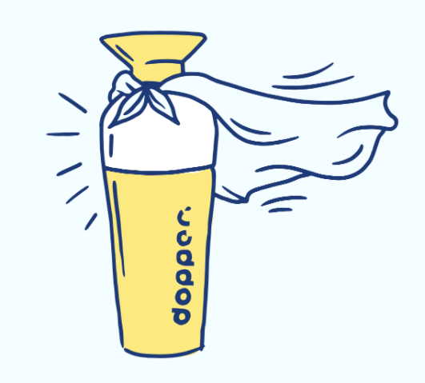

40
flessen
Een Dopper-fles voorkomt dat 40 wegwerpflessen in onze oceanen belanden.


Een Dopper-fles voorkomt dat 40 wegwerpflessen in onze oceanen belanden.
Zoveel plastic wil Dopper uit onze oceanen weghouden.
Springen een gat in de lucht wanneer jij kiest voor een herbruikbare waterfles.

De oceanen redden. Het is een missie die 365 dagen per jaar doorgaat. Want het maakt de wegwerpwaterflessen die onze oceanen vervuilen niet uit of het buiten bloedheet of ijskoud is. En, vanaf nu, jou ook niet meer.
Dankzij de nieuwe Dopper Insulated. Deze dubbelwandige, geïsoleerde fles houdt je water 9 uur warm of 24 uur koud. En helpt je onze oceanen redden. Het. Hele. Jaar.
Eén fles. Alle seizoenen.

Éen fles. Alle seizoenen. Geen probleem.
KOOP NU
Kies jouw kleur, jouw patroon, jouw tekst.
CREËER JE EIGEN DOPPERElke verkochte fles draagt bij aan Doppers projecten. Benieuwd hoe we een impact maken?

Op zoek naar goed (lees: ocean-saving) nieuws?